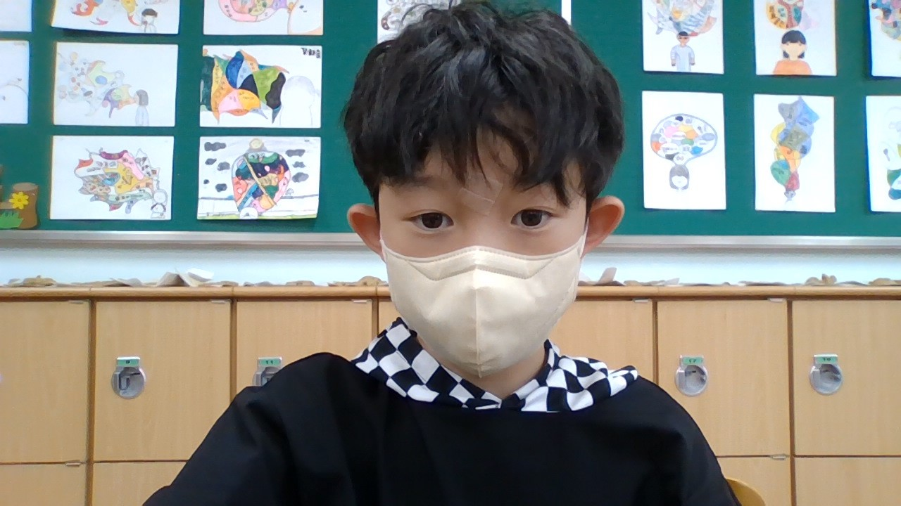

<h1>위험한 계곡</h1>
어릴때 계곡에 가족들과 함게 감<br/>
놀 생각에 기분이 좋아짐<br/>
그런데 <b>미끼에 넘어져</b> 죽을뻔 함<br/>
심장이 빠르게 쿵쾅 쿵쾅 거림<br/>
그렇게 죽을 줄 알았는데 갑자기 <b>우리 형이 나타나서<b/> 다행히 내 손을 잡아 주어서 살음<br/>
다행히다고 생각하면서 <i>다리의 힘이 풀림<b/><br/>
